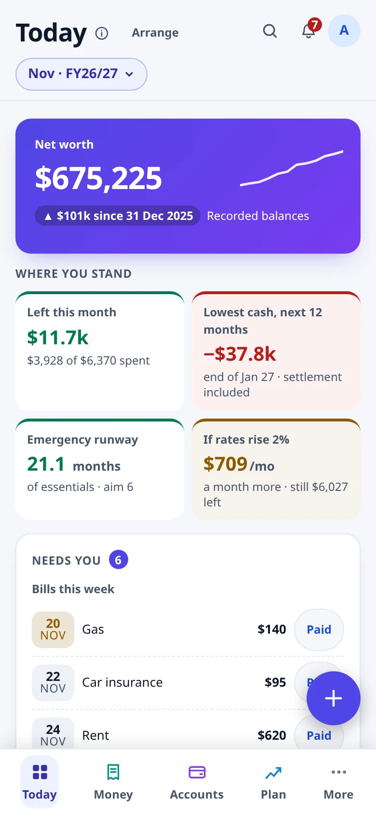
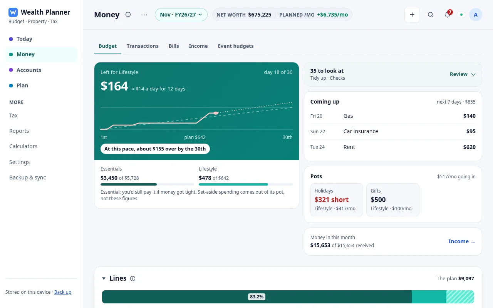
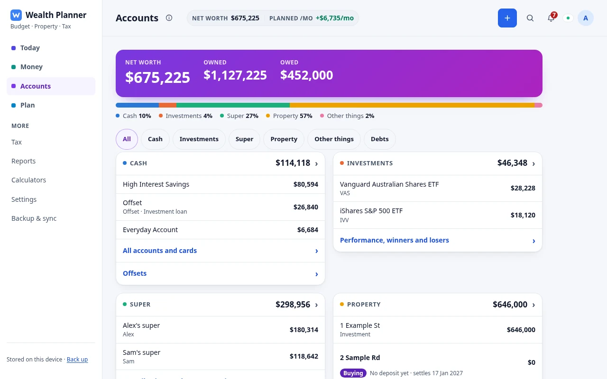
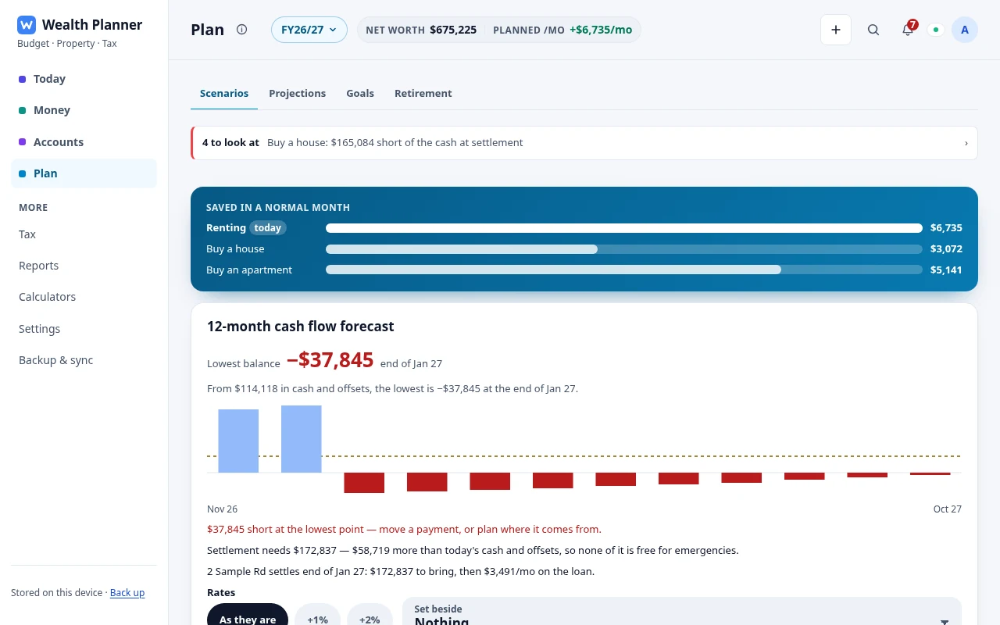
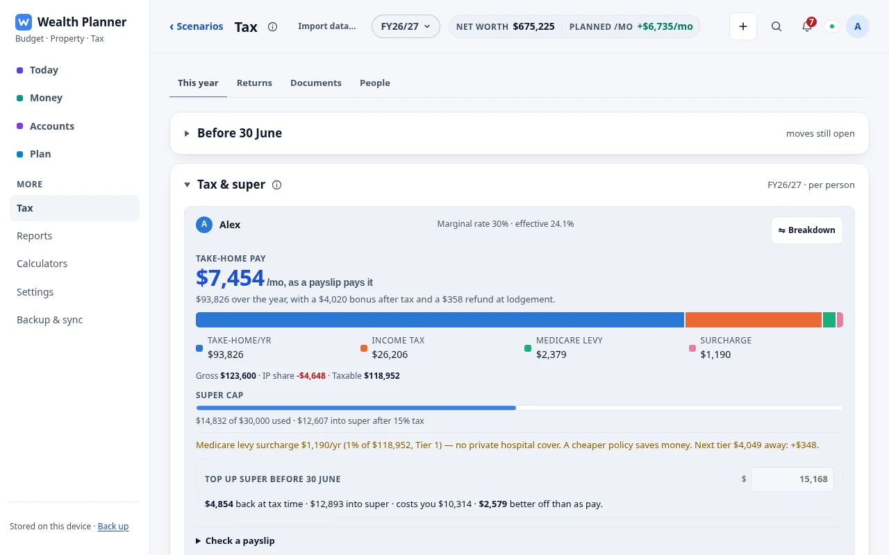

Your household’s money, in one place.
A free planner for Australian households. See what’s left in the budget, work through tax and super, and plan for a home. Your figures stay in your browser by default.
Open a file someone shared
Private by design
Start without an account or bank login. Add spending using statements you download from your bank. The app keeps your household in this browser unless you choose to export, share or sync it.
You can download a backup or use passphrase-encrypted sync with your own Dropbox or a folder you choose. Clearing browser data clears the household, so keep a backup.
What connects to the internet?
Optional sync sends an encrypted copy. Market prices use ticker symbols. If you choose Ask Claude, it sends a reduced summary when you ask, using your own API key.
GoatCounter counts visits to this landing page without cookies. The counter receives this page’s path and standard browser request information.
See what the app can do
See what’s left to spend
Plan for essentials, leave room for lifestyle spending, and bring in purchases from your bank statements. Keep trips and other events in their own budgets.

See what you own and owe
Bring bank accounts, debts, investments, super and property into one view of your household’s net worth.

Compare the choices you’re about to make
Compare renting and buying and see what each would do to your cash. Look further ahead with projections and retirement planning.

Work through Australian tax
Estimate income tax, Medicare and super. Track what you need for your return in myTax order, and use Reports to see how your figures add up.

A few practical questions
How do I start?
Try the sample to see how the pieces fit together, or start your own household. You can enter a budget first or import a bank statement.
Can two people plan together?
One household can include both people’s income, accounts and tax details. Optional encrypted sync lets you use that household on more than one device.
Can I use it on my phone or offline?
Open Wealth Planner in your phone’s browser or install it from the browser menu. Once the app has loaded, you can open previously visited screens and edit your household offline. Live prices and Dropbox sync need an internet connection.
Is this financial advice?
It’s general information. The estimates depend on your figures and the assumptions you choose.